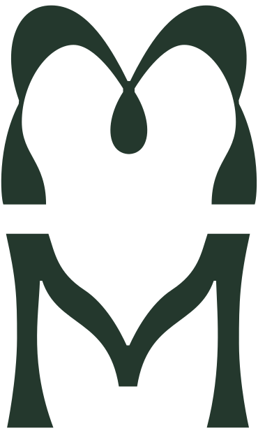

Paisagismo residencial
Jardins, quintais e áreas de convívio pensados pra quem vai viver ali todos os dias.
Há mais de 25 anos transformamos espaços cinzas em galerias vivas. Do jardim residencial ao empreendimento inteiro.
Queremos ser curadores da arte tropical que cresce por aqui. Cada projeto começa no lugar — e no que ele já tem de melhor.
Jardins, quintais e áreas de convívio pensados pra quem vai viver ali todos os dias.
Parques, empreendimentos e áreas públicas — da concepção ao acompanhamento em obra.
Cada etapa é pensada com cuidado — inclusive depois que o projeto é entregue.
Um parque pensado pra refletir a alma do paraense. Suas águas, suas cores, o modo como a cidade respira a Amazônia. Cada espécie escolhida com cuidado e respeito pelo que é nativo daqui.
A gente escuta o que você imagina pro espaço — e visita o lugar pra entender o que ele pede.
Desenhamos a proposta com as espécies certas pro clima, a luz e o uso daquele espaço.
Acompanhamos a obra de perto, do plantio ao último detalhe de acabamento.
Um jardim é vivo. A gente continua junto pra ele crescer do jeito que foi pensado.
“No fim, é sempre a natureza quem cria. Nós apenas emolduramos.”Margareth Maroto
Começamos construindo quintais bucólicos. Era só o início da aventura. Hoje somos referência na nossa capital e estamos em projetos residenciais e comerciais por todo o país.
O que não mudou foi o cuidado. Espalhar a calmaria e a beleza do verde em meio ao cinza urbano continua sendo o motivo de tudo.

É o Tracoá — uma planta que cresce tanto no solo quanto na copa das árvores e está na maioria dos nossos projetos. Adotamos ela como símbolo pela adaptabilidade. É assim que a gente trabalha.
Escala, prazo e execução — falamos a língua de quem entrega um empreendimento inteiro. Sem perder o que faz um espaço virar referência depois de pronto.
Conta pra gente o que você tem em mente. A primeira conversa é sem compromisso.
Falar com a nossa equipe